Topics promotion video marketing
social media13min read 8 Feb 2023
How to Define Your Target Audience?
What is the first thing every marketing specialist does when starting a new project? Of course, learning more about the business, its product or service, and competitors. The second step is setting the goals and creating a marketing strategy to reach those goals.
Did we miss something? There’s another vital step that marketing specialists often skip — defining the target audience for a business. Such a responsible task is going to affect the success of your advertising campaign. So be sure to give it the attention it deserves.
Whether it’s a small business or a YouTube channel you’re trying to promote, you need to know who your target audience is. Different groups of people face different problems. So, you need to make sure that you provide them with the right solutions at the right time and place.
In this article, you’ll learn what a target audience is, how to define and find your target audience, and why doing so is essential to reach your marketing goals. Let’s begin!
- Target Audience Definition
- How to Define Your Target Audience
- Why Defining Target Audience Matters
- Target Audience vs. Target Market
1. Target Audience Definition
To ensure we’re all on the same page, let’s define what a target audience is.
Business Dictionary provides the following definition: “A target audience is a specific group of people identified as the intended recipient of an advertisement or message.”
Defining a target audience means identifying the group of people that might be interested in a business’s product/service and acquiring specific demographic information about the said group. The more precise the data is, the better.
2. How to Define Your Target Audience
Today, there are almost4.6 billion active internet users in the world, which is more than half of the global population. The good news is that you have unlimited access to those users and can easily promote your business online to increase revenue. The bad news is — not everyone will be interested in your offers.
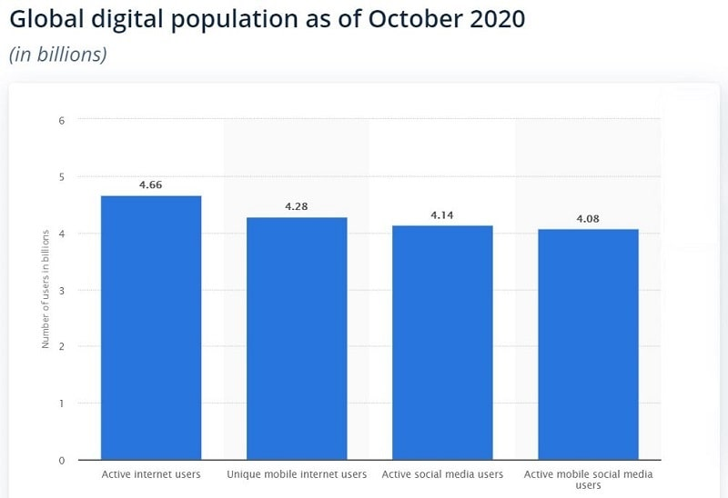
Source: Statista No matter how much effort you put into crafting the perfect marketing message, you can’t sell your solutions to those who are not interested. This is why defining your target audience is crucial: You need to understand what person you are offering your product to and why they should care.
However, the fact that you understand the need in defining your target audience doesn’t necessarily mean that you know how to do it. This is why we’ve prepared some useful and actionable tips with which you can boost your digital marketing efforts and increase sales.
Now, let’s go step by step through the process of defining your target audience.
Specify What Problems Your Product/Service Solves
People turn to companies because they face different challenges and problems. Their goal is to find a solution that solves a specific problem. To provide them with the right solution, you should know what issues your product or service solves in the first place.
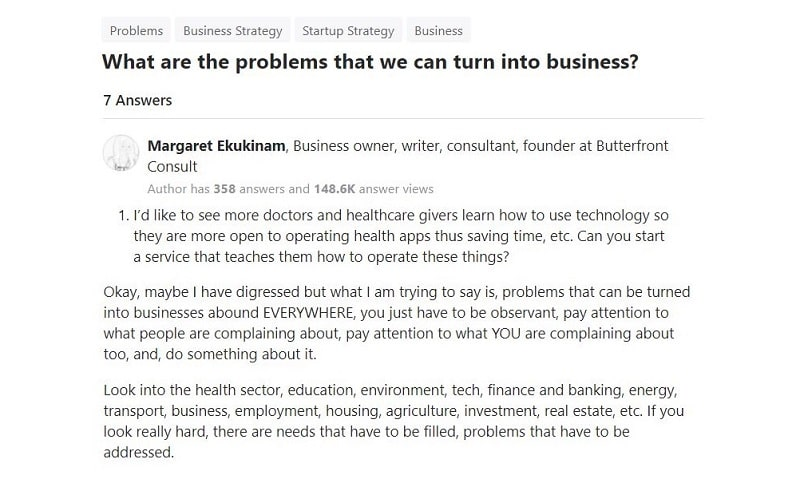
Source: Quora So how to come up with a new product or service that solves a specific problem? This process can be split into four steps:
For instance, we at Renderforest realized that there’s a problem with the video creation process. Many startups and small business owners can’t afford to get custom animations for their target audiences or don’t have the technical knowledge to create videos themselves.
- Identify the problem or the pain point that needs to be solved. Sometimes, even your potential customers don’t realize that they have a problem. Thus, you need to clearly state it and prove that it’s a high-priority one. To identify the problem, you must ask the right questions and pay attention to details.
- Analyze the problem by going deeper into the reasons behind it. Learn more about what causes that problem and how it affects people.
- Target that problem and find a solution for it. Analyze the existing ones if there are any. Try to develop several solutions and compare their advantages and disadvantages.
- Pick one solution — the most optimal one. Create your offer based on this solution.
We believed that video and animation creation should be simplified for people who don’t have the technical skills or financial resources to produce a professional video. There was a demand for a cost-effective solution. And we came up with one — an easy-to-use video creation platform with
customizable templates.
Your business depends on your customers and the sales they bring, so their problems are your problems too. When you specify the problems that your offer solves, you can easily find your target audience — those who are struggling to solve those problems.
Look at Your Current Customer Base
Looking at your current customer base will give you valuable insights into how people interact with your product or service. AI will help you accomplish this task most effectively. While analyzing the data, you’ll most probably find some common patterns. This can be their demographic, buying behavior, age group, location, etc.
These patterns will help you break down your target audiences into different segments and analyze them separately to have a better idea about who your customers are. Use customer segmentation to identify the groups of clients that bring the most value to your business and try to attract more similar people.
Based on thePareto principle or the 80/20 rule, we can state that approximately 80% of your income comes from 20% of your customers.
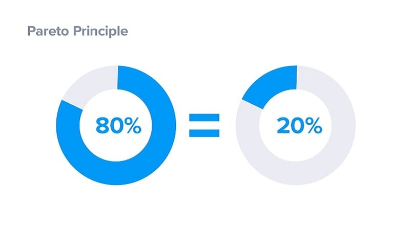
Source: SuperOffice Once the first step of finding out who those customers are is complete, you can then go ahead and observe them. Here are the things that you should pay the most attention to:
The results may sometimes be surprising and different from what you expected. That’s why it’s essential to have this information at hand. Once you have all the info you need, you and your marketing team can target a similar audience to get more valuable customers.
- The source of acquisition, or how they found your company
- Their buying habits
- The way they interact with your company
- The problems and challenges they have
- How they use your product or service to solve those problems
Besides analyzing a specific segment of your customers, you also need to have a better look at your audience in general. Check how your audience interacts with your company on different platforms and social media channels, how they engage with your content, what type of content they like to share on social media, and whether or not you can successfully convert them into new customers.
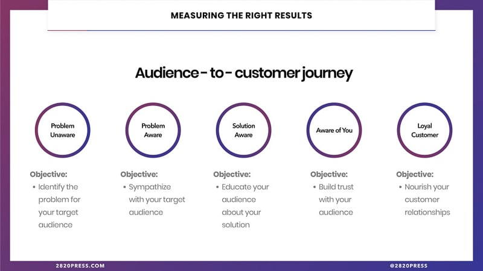
Source: 2820 Press Another advantage of analyzing your existing audience is that you’ll find out who your target audience is not. This may not seem like beneficial information to have, but we promise you, it is. Knowing who not to include in your marketing campaigns will save you significant time and resources at the later stages of your marketing plan.
Research, analyze, and target the right audience and make sure to correctly define your audience segments. It doesn’t matter how much data you have on your target audience if you don’t use it the right way to improve your marketing strategy.
Check Out Your
While doing your research, it’s equally important also to analyze your competitors and their marketing strategies. If you skip this step, you’ll struggle with smartly positioning your brand.
Competition
One of the main pillars of competitor research is checking out your competitors’ target audiences. Why is this important? First of all, you’ll discover more about your direct competitors by learning about their target audiences. By analyzing their content, offers, social media marketing strategies, you’ll also see what they are missing and how you can fill in the gap.
This can also give valuable insights into your own target audience. Because of the similarity in the offered product or service, your target audiences will likely overlap quite a bit. This can help you build yourbrand strategy and product branding much more carefully to set your business apart from any competition.
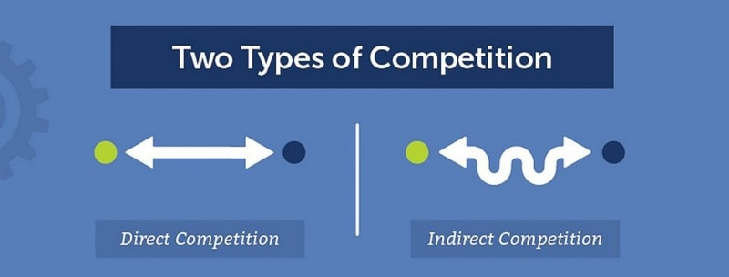
Source: Marketing91 Checking out your competition is especially helpful when you’re new to the industry and don’t have customers or enough research to rely on when trying to understand your target audience.
So, what information do you need about competitors?
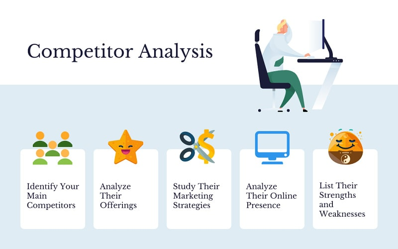
- Competitor’s product or service and positioning: Why are people interested in them?
- Pricing: Is it cheap or expensive? Can you offer a better price?
- Social media profiles: Are they active on social media? Do they have an active follower base?
- Overlooked areas: Identify missed opportunities. Can you come up with a better or more comprehensive solution?
For example, suppose you decided to open a real estate agency. In that case, you should analyze the existing market and your competitors to identify their strengths and weaknesses, as well as understand who their ideal customer is. This information will later help you come up with a better offer and find more opportunities for business growth.
Choose Your Target Demographics
At this point, you probably have an image of your perfect customer in mind. Now, it’s time to have it documented. One of the ways to define the specific audience you’re targeting is by using demographic information. Let’s see what information it includes:
- Age
- Gender
- Location
- Ethnicity
- Religion
- Education
- Occupation
- Income
- Marital status
Identifying the ideal demographics for your offer can help you easily find your target across different platforms and social media networks.
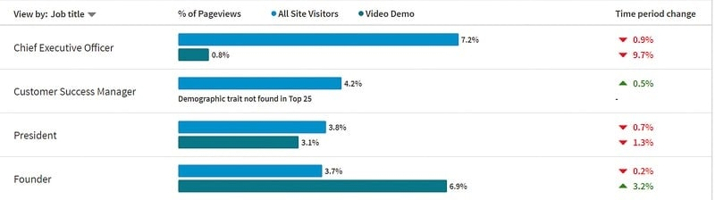
Source: Clix Marketing Let’s look at an example of a target demographic and how it can be helpful. Let’s say you are an English tutor working online and want to find students from Japan. Your target audience demographic might look like this — a 16-20-year-old female student from Tokyo with basic grammar and vocabulary knowledge.
Let’s take another example. If you sell childcare products, you can target 25 to 35-year-old married women with a yearly income of $40.000 or higher. This is an example of specific targeting based on demographics.
Remember also to target those who are decision-makers or have an influence on the decision-makers (e.g., parents for their children).
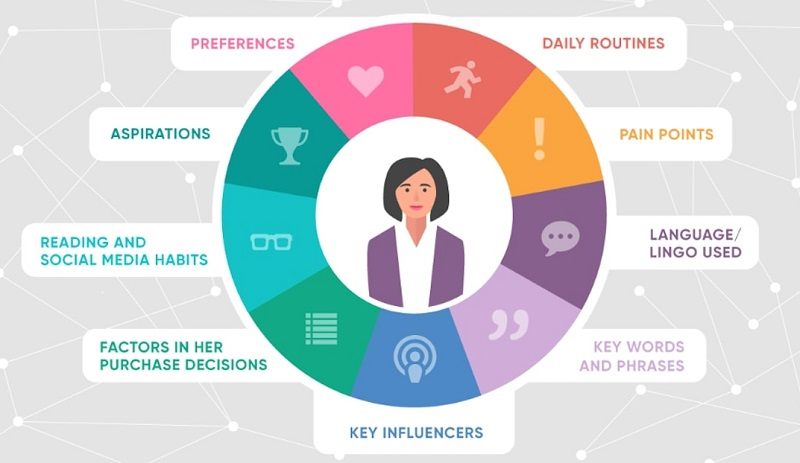
Source: CloudApp Your targeted demographics are determined by what product or service you provide. The more you understand what problem your product or service solves, the better understanding you will have of what your target audience should look like.
Define the Detailed Characteristics of Your Target
After completing the above-mentioned steps, it’s time to finalize the information you’ve gathered and put everything together in a marketing plan. Make sure to include the following points:
Once you have all the needed information, you can easily find and engage with your audience in order to provide them with the right solution at the right time and place.
- Demographics, based on your industry and niche
- Psychographics, built using your analysis of user and audience behavior
- Needs and problems detected during your research
- Solutions rooted in your product/service analysis
Now you know what steps to take in order to target the right people for your business. As you can probably guess, you’ll need to rely on your research skills quite a lot during this process. The good news is, you can always use e-commerce tools to ease data collection and analysis.
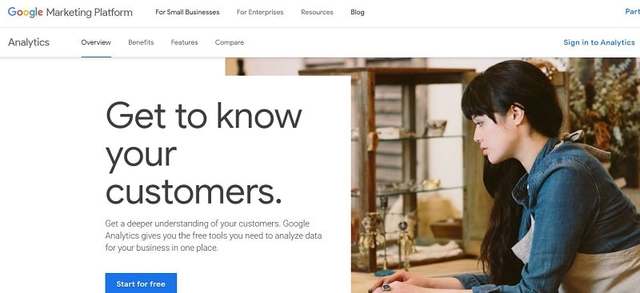
Source: Google Marketing Platform
3. Why Defining Target Audience Matters
Have you ever seen an ad on Google, Facebook, or any other social media platform that is not relevant to you? We get them more than we’d like to. These ads are the results of lousy targeting. Although social media platforms have given us advanced targeting tools, it looks like some marketers are still shooting in the dark trying to reach as many people as possible.
What causes bad audience targeting? Not doing your research and collecting relevant data about your target audience. Such marketing results are pretty disappointing, so you want to make sure to avoid this mistake.
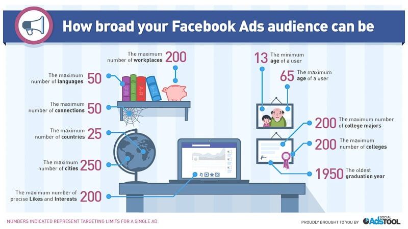
Source: Social Ads Tool Now let’s go deeper into why having a detailed target audience matters and how it can improve your campaign performance.
Increase ROI
In business, every dollar counts. Especially if you are on a tight budget, you just have to spend it wisely. Wondering how your target audience and marketing budget are connected? Let’s take an example.
You have X budget for your advertising campaign and expect your return to be somewhere around 2X-3X. After deciding to invest your X budget into running your online campaign on Facebook or another social media network, you prepare the offer, write the text, and go for general targeting without thorough research.
After spending your budget on the social campaign, you realize that you didn’t get the expected results. Why? The reason behind your failed campaign is that you didn’t consider your ideal buyer persona, ended up targeting a wide audience, and thus risked putting out a message that was too promotional and generic.
So, before allocating your marketing budget to any campaign, first, think about the ideal person that would be interested in your offering and craft a message that’s customized to that specific person.
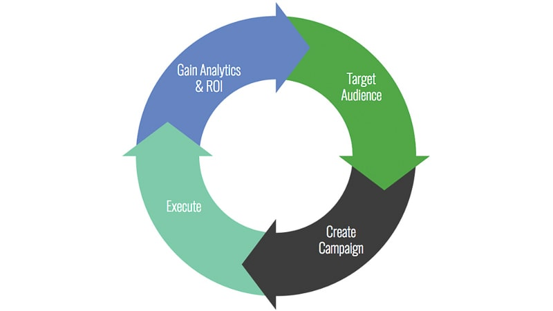
Source: Aislelabs
Create Content That Converts
It’s impossible to deliver relevant content that resonates with people if you don’t know anything about their challenges, wants, and interests. And it’s also not possible to curate content that will interest everyone, as people have different needs and preferences. This applies to any type of content you share with people, starting from your website content and blog articles to your social media posts and ads.
Before sharing your content, you need to plan it first. If you don’t know the pain points of your target audience, you can’t deliver useful info that helps them overcome those challenges. Generally, blog posts that are directed at no one in particular tend to perform much worse compared to ones that have been written with the reader’s intent in mind.
Source: CoSchedule If you want to promote your YouTube channel, for example, and your goal is to reach more viewers interested in fitness, you need to determine whether to target beginners or long-time fitness enthusiasts that have been training for years. Yourvideo content will certainly be different for each case.
Then, as time goes by, analyze the performance of your videos or blog using tools like Google Analytics to understand which type of content resonates with your audience better. This is an ongoing process, and the results will improve with time.
The success of your business hugely depends on how you communicate with your audience and build relationships with potential clients. So know your audience and craft content that either benefits or interests them (preferably both).
Build a Strong Brand
Now we know the importance of targeting for content creation. But how does it affect your brand as a whole? A well-established brand needs a clear mission and set of values. Each branded asset or piece of content you produce has to reflect the values you believe in.
The most reliable way to form a strong bond with your customers is to target and attract people that share the same values as you. For example, if your goal is to produce high-quality clothing at affordable prices, the crowd that values luxury and high-end fashion is most definitely not the one you should have your eyes on.
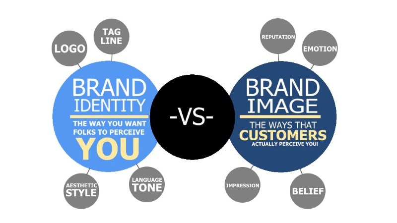
Source: Oberlo To create an attractive brand image and develop a loyal customer base that trusts your brand, you need to be clear about what you believe in and find people who share that vision. While defining the target audience for your business, take into consideration the following:
Communicating your brand values to the wrong people won’t help you promote your brand and won’t turn prospects into customers. On the contrary, it will result in wasted resources that could’ve otherwise been spent on a more suitable audience for your business.
- Your brand can have more than one target segment
- Your potential customers are not the only target for your brand; don’t forget about inverters and stakeholders
Improve Your Product
For every product or service, there’s always room for improvement. Yours is not an exception. Another advantage of having a well-defined target audience is that you can always rely on their experiences and feedback to upgrade your product or service.
There are many tools that help you track user activity on different social media platforms or your website. If you choose the right metrics to track and analyze the data, you can effectively improve customer experience.
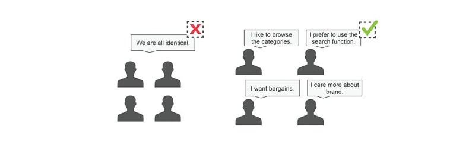
Source: Interaction Design Foundation Having a defined target audience will help your marketing team create content tailored to the needs of your potential audience. This, in its turn, helps to increase sales and build a strong brand that provides more advanced solutions.
4.Target Audience
Very often, the terms “target audience” and “target market” overlap. When researching and identifying your target audience, it’s very important to know the difference between a target audience and a target market.
vs. Target Market
A target market is defined as a group of people that currently are or can potentially become the customers of your business. Let’s take the example of childcare products. If you are selling products for children, your target market can be parents between the ages of 25-45. It’s a single group of people likely to show interest in your business.
Your target audience is a subgroup of your target market. That is, a target audience is a smaller part of a larger target market. It is a more specific group you want to reach with an advertising campaign or another promotional strategy.
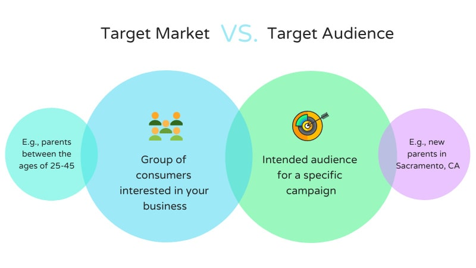
target market vs target audience
In our childcare product example, you may have several target audiences. You can have advertising campaigns for products made for children of different ages and target each ad at a specific group of parents in a particular location. In this case, your target market is narrowed down to several target audiences.
Understanding the difference between the two types of audiences for a business will help to direct the right marketing efforts to the right kind of audience. So keep this in mind while conducting your research.
Conclusion
These were some actionable steps on how to define your target audience and understand how it relates to your target market. Once you determine your target audience, you still need to periodically return to it to ensure your data is up to date. Over time, your business and its customer base can change, which is why defining a target audience is not a one-time task.
Learn about the problems your product solves, target people who need a solution, and write content tailored to their challenges and needs. After all, what matters the most is the relationship between your business and its audience. Show that you care and become a company people turn to for help.
Create professional branded videos adjusted to the specific needs of your target audience. Pick a template and customize it in a couple of minutes